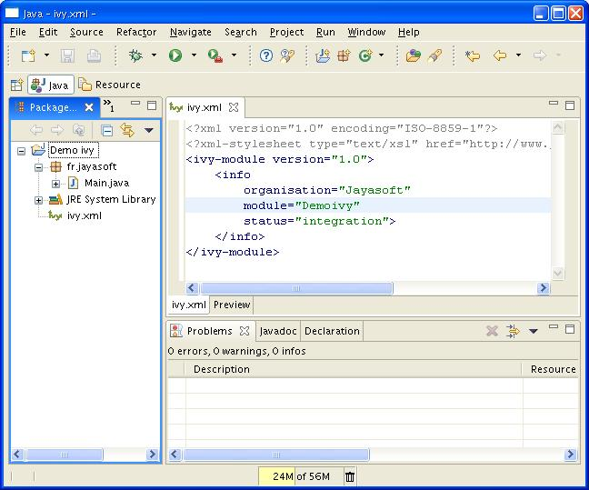
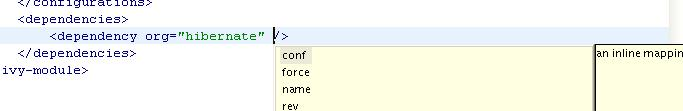
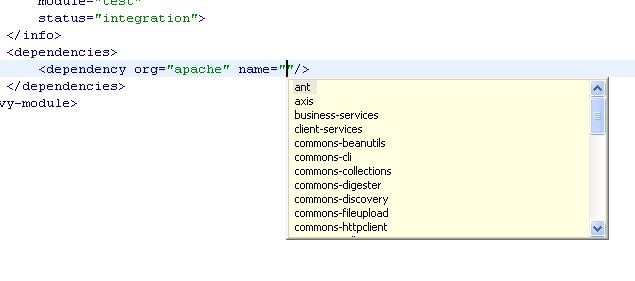

Editor
Edit your ivy files easily in eclipse with the IvyDE Plugin editor.
IvyDE brings creation wizard, html preview and completion for Ivy xml tag, attributes but also for attributes' values!
Choose an organisation and browse thru its projects and revisions.
Content
Wizard
IvyDE comes with a wizard that allows you to create an ivy.xml file for your project.To open the wizard choose File->New->Other in the Eclipse menu (Ctrl+N by default)
The Ivy wizard is accessible in the category Other. Select it then click Next

The wizard contains only one page, and is very simple.

- Wizard fields:
- Container: you have to select the targeted project. (This is already set if you access the wizard thanks right click menu on your project root folder)
- File name: the ivy file name. (ivy.xml by default and its better to keep it in most of case)
- Organisation: the component owner name. (your company name or the company that provides the component if you are writing ivy.xml file for 3rd party jars). Note this value can be set in the Ivy preference page
- Module name: the component name.
- Status: the status of the project. (integration by default since we have just created its ivy file :-). Please refer to Ivy documentation for more details)
Ivy Editor
Xml Editor

The Ivy's eclipse editor provides xml syntax coloration, tag completion, tag's attribute names completion, and for dependency and configuration tag value completion.
Completion comes with contextual help. The completion popup is displayed when hitting simultaneously the CTRL and the SPACE keys.
Available completions:
- Xml structure: allows you quickly to insert the good tag at its right place. If the tag can have nested children both notations, simple tag and open tag, are proposed

- Tag attributes: when your cursor is placed in a tag bracket the completion show available attributes for the enclosing tag.
 - Attributes values: when your cursor is placed in the quote of an attribute value the completion shows available values for the matching attribute.
- Available value completion
- info: organisation (pref based), module (eclipse project name),
- info/ivyauthor: name (pref based), url (pref based)
- info/description: homepage (pref based)
- info/license: name
- info/repository: name (the other attributes depend on it), url, ivys, pattern, artifacts
- configurations/conf: visibility, deprecated, extends
- publications/artifact: type, conf, ext
- dependencies/dependency: org, name, rev are resolved thanks to Ivy using the ivyconf set in the project Ivy preference page. If not set to "default" Ivy uses its defaults resolvers configuration (ie ivyrep + ibiblio), and if not set Ivy uses the ivyconf set in the Eclipse Ivy preference page. conf values are computed from current ivy.xml file and the dependency ivy.xml file if any.

Printer Friendly